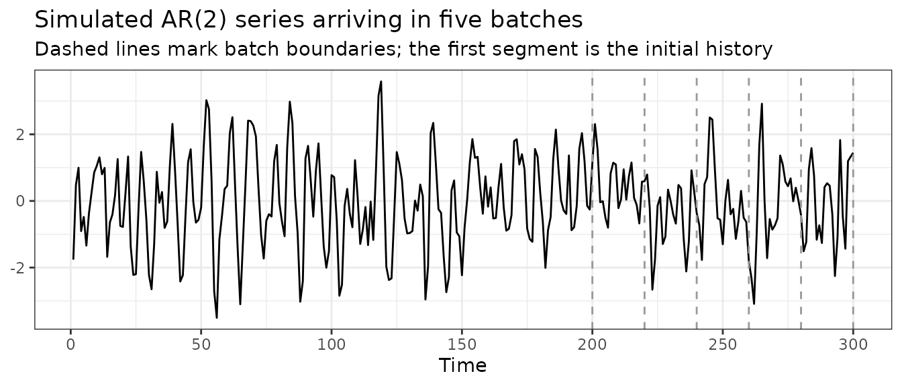

Introduction
The conformal methods are built on top of cvforecast(),
which fits a forecasting model repeatedly on a rolling or expanding
origin and records the resulting errors. This vignette deals with a
narrower practical problem: what to do when new observations arrive
after the pipeline has already been fitted.
One answer is to start over. Append the new observations to the
series, then call cvforecast() and the conformal method
again on the whole thing. This is correct, but wasteful. The forecasting
model is fitted again at every rolling origin, including all the origins
that were fitted the previous time, and the conformal calibration is
repeated for every historical time step whose prediction interval has
already been computed and reported.
The update() method does the same job with less work. It
appends the new data, computes forecasts only for the newly added
origins, and continues the conformal calibration from the point it had
reached. Prediction intervals that were already issued do not change,
and the result is the same one you would obtain by refitting on the full
series.
A streaming scenario
Suppose we forecast a series that is updated in batches. An initial
history is available, and new observations then arrive periodically,
whether as daily closing prices, monthly readings or sensor batches. At
each arrival we want prediction intervals for the next h
steps that reflect all the data seen so far.
We simulate such a stream from an AR(2) model, at a scale that keeps this document quick to render: 200 initial observations, followed by five batches of 20 observations each, giving a final series of length 300.
set.seed(101)
n0 <- 200
n_batch <- 20
n_batches <- 5
total_n <- n0 + n_batch * n_batches
series_full <- arima.sim(n = total_n, list(ar = c(0.8, -0.5)), sd = sqrt(1))
old_series <- ts(series_full[1:n0])
batches <- split(
as.numeric(series_full[(n0 + 1):total_n]),
rep(seq_len(n_batches), each = n_batch)
)
autoplot(series_full) +
geom_vline(xintercept = n0 + n_batch * (0:n_batches), linetype = "dashed",
colour = "grey60") +
labs(
title = "Simulated AR(2) series arriving in five batches",
subtitle = "Dashed lines mark batch boundaries; the first segment is the initial history",
x = "Time", y = NULL
) +
theme_bw()
The forecasting model is an AR(2) fitted with Arima(),
as in the main vignette. A naive forecaster is used as the scorecaster
for pid().
far2 <- function(x, h, level) {
Arima(x, order = c(2, 0, 0)) |> forecast(h = h, level = level)
}
naivefun <- function(x, h) {
naive(x) |> forecast(h = h)
}All four conformal methods take the same cvforecast
object, so we calibrate each of them and follow all four through the
stream. The fits are built with conformal(), which takes
the method as its method argument instead of requiring a
different function name for each one. Collecting the four fits in a list
lets the loops below treat them uniformly.
h <- 3
level <- 95
window_len <- 50
ncal <- 40
Tg <- 200
KI <- 2
fc0 <- cvforecast(old_series, forecastfun = far2, h = h, level = level,
window = window_len, initial = 1)
cps_list <- NULL
cps_list[["scp"]] <- conformal(fc0, method = "scp", ncal = ncal, rolling = TRUE)
cps_list[["acp"]] <- conformal(fc0, method = "acp", ncal = ncal, rolling = TRUE)
cps_list[["pid"]] <- conformal(fc0, method = "pid", ncal = ncal, rolling = TRUE,
scorecastfun = naivefun, Tg = Tg, KI = KI)
cps_list[["acmcp"]] <- conformal(fc0, method = "acmcp", ncal = ncal, rolling = TRUE,
KI = KI, Tg = Tg)
scp_initial <- cps_list$scpEach element of cps_list holds the state of one pipeline
after the initial 200 observations. Nothing here is update-specific:
conformal(fc0, method = "scp", ...) is the same call as
scp(fc0, ...), and likewise for the other three.
Updating as new data arrives
As each batch arrives, we pass it to update() together
with forecastfun. The same call serves all four methods,
because update() dispatches on the class of the object it
is given and replays the settings recorded in it.
timings_update <- matrix(
0, nrow = n_batches, ncol = length(cps_list),
dimnames = list(paste("batch", seq_len(n_batches)), names(cps_list))
)
for (b in seq_len(n_batches)) {
for (m in names(cps_list)) {
timings_update[b, m] <- system.time(
cps_list[[m]] <- update(cps_list[[m]], new_data = batches[[b]], forecastfun = far2)
)["elapsed"]
}
}
round(timings_update, 3)
#> scp acp pid acmcp
#> batch 1 0.136 0.142 0.213 0.459
#> batch 2 0.137 0.141 0.212 0.471
#> batch 3 0.137 0.142 0.211 0.459
#> batch 4 0.139 0.142 0.212 0.574
#> batch 5 0.141 0.143 0.216 0.460That is the whole streaming loop: five calls to update()
per method, each doing only the work required by the 20 new observations
in that batch.
The cost of refitting from scratch
For comparison, we repeat the same five arrivals but rebuild the
pipeline completely at each step. The batch is appended to the series,
cvforecast() is called on the full history, and every
method is calibrated again from the beginning. A single
cvforecast() fit is shared by the four methods at each
step, since computing it four times over would overstate the cost of
this approach.
current_series <- old_series
timings_full <- matrix(
0, nrow = n_batches, ncol = length(cps_list) + 1L,
dimnames = list(paste("batch", seq_len(n_batches)),
c("cvforecast", names(cps_list)))
)
for (b in seq_len(n_batches)) {
current_series <- ts(c(current_series, batches[[b]]))
timings_full[b, "cvforecast"] <- system.time(
fc_full <- cvforecast(current_series, forecastfun = far2, h = h, level = level,
window = window_len, initial = 1)
)["elapsed"]
timings_full[b, "scp"] <- system.time(
conformal(fc_full, method = "scp", ncal = ncal, rolling = TRUE)
)["elapsed"]
timings_full[b, "acp"] <- system.time(
conformal(fc_full, method = "acp", ncal = ncal, rolling = TRUE)
)["elapsed"]
timings_full[b, "pid"] <- system.time(
conformal(fc_full, method = "pid", ncal = ncal, rolling = TRUE,
scorecastfun = naivefun, Tg = Tg, KI = KI)
)["elapsed"]
timings_full[b, "acmcp"] <- system.time(
conformal(fc_full, method = "acmcp", ncal = ncal, rolling = TRUE,
KI = KI, Tg = Tg)
)["elapsed"]
}
round(timings_full, 3)
#> cvforecast scp acp pid acmcp
#> batch 1 0.942 0.169 0.185 0.693 2.377
#> batch 2 1.057 0.199 0.212 0.798 2.740
#> batch 3 1.154 0.223 0.240 0.897 3.199
#> batch 4 1.264 0.250 0.268 1.005 3.444
#> batch 5 1.370 0.275 0.297 1.108 3.899The cost of the cvforecast() step grows with every
batch. At batch = 5 it fits the AR(2) model at essentially
every rolling origin of a 300-point series, most of which were already
fitted during the previous four iterations. In the update()
loop that cost stays roughly constant instead, because each call only
touches the observations that have just arrived.
What update() expects
Three points are worth keeping in mind when calling
update().
forecastfun has to be supplied again at every call. It
is not stored on the object, and it should be the same function used to
build the original cvforecast() object, since it is used to
fit the model at the newly added origins.
The object being updated has to come from one of the conformal
methods in the package. update() reads the settings
recorded when the object was built, and reports an error if they are not
available rather than falling back on defaults.
update() preserves the calibration settings stored in
the fitted object. Arguments supplied through ... are
forwarded to forecastfun; they do not override the
conformal configuration. Consequently, calibration parameters such as
ncal, lr and KI should not be
supplied to update(). A different calibration specification
requires refitting the conformal method with the desired parameter
values.
Exogenous regressors
If the original cvforecast() object used
xreg, update() accepts a matching
new_xreg and extends the stored regressors with it. The
number of rows in new_xreg must match the number of new
observations.
set.seed(202)
n_x <- 60
xreg_full <- matrix(rnorm(n_x + 10), ncol = 1)
y_x <- ts(as.numeric(arima.sim(n = n_x, list(ar = 0.5))) + 2 * xreg_full[1:n_x, 1])
lm_fun <- function(x, h, level, xreg, newxreg) {
Arima(x, order = c(1, 0, 0), xreg = xreg) |>
forecast(h = h, level = level, xreg = newxreg)
}
fc_x <- cvforecast(y_x, forecastfun = lm_fun, h = 2, level = 95, window = 30,
initial = 1, xreg = xreg_full[1:(n_x + 2), , drop = FALSE])
cp_x <- scp(fc_x, ncal = 20, rolling = TRUE)cp_x$xreg has 62 rows: the 60 historical values, plus
the 2 future values needed for the last h = 2 forecast.
When 5 observations are appended, these 2 stored future values become
the regressors for the first 2 new observations. Therefore,
new_xreg supplies exactly 5 subsequent rows: the first 3
complete the regressor history for the new observations, and the final 2
preserve the future h = 2 forecast horizon.
new_y <- as.numeric(arima.sim(n = 5, list(ar = 0.5))) + 2 * xreg_full[(n_x + 1):(n_x + 5), 1]
new_xreg <- xreg_full[(n_x + 3):(n_x + 7), , drop = FALSE]
cp_x_upd <- update(cp_x, new_data = new_y, forecastfun = lm_fun, new_xreg = new_xreg)The forward forecast
When the original cvforecast() object was built with
forward = TRUE, which is the default, it carries
mean, lower and upper components
holding the out-of-sample forecast from the most recent origin. After
the new data have been appended, update() refits the model
at the new final origin, so that these components describe a forecast
made from all the data now available.
scp_initial$mean
#> Time Series:
#> Start = 201
#> End = 203
#> Frequency = 1
#> [1] 1.1155681 0.4993606 0.1030395
scp_upd <- update(scp_initial, new_data = batches[[1]], forecastfun = far2)
scp_upd$mean
#> Time Series:
#> Start = 221
#> End = 223
#> Frequency = 1
#> [1] 0.4228521 0.3087081 0.3112907The forecast origin moves from the end of the initial 200
observations to the end of the 220 now available, as it would after a
fresh cvforecast() call on the extended series.
Summary
update() extends a fitted conformal pipeline with new
observations and returns the same result as rebuilding it from scratch,
at a fraction of the cost. Prediction intervals that have already been
issued are left unchanged, and the saving grows with the length of the
accumulated history. Supply forecastfun at every call, keep
the calibration settings fixed, and pass new_xreg when the
original object used exogenous regressors.